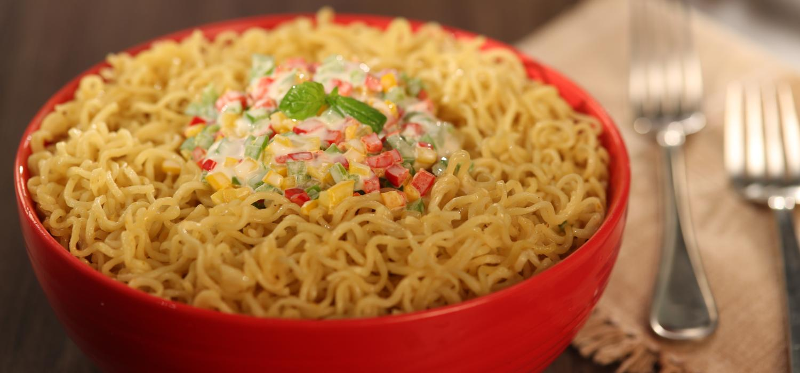

My 2 min recipe to make Maggi
MAGGI Noodles is always a constant companion.
Enjoy Cheese MAGGI Noodles, Paneer MAGGI Noodles, Egg MAGGI Noodles,
Veg MAGGI Noodles that add a twist of
Flavour and yumminess to your everyday MAGGI Noodles.

Ingredients
- MAGGI 2-Minute Noodles (Masala)
- Olive oil
- Capsicum
- Chesse
- Milk
Recipe Steps
- Prepare all the Ingredients
- Add water and boil maggi
- In a pan take some oil and heat it.Add capsicum
- Add the maggi to the pan and add chese and milk
- Cook for 2 mins and Serve hot
home